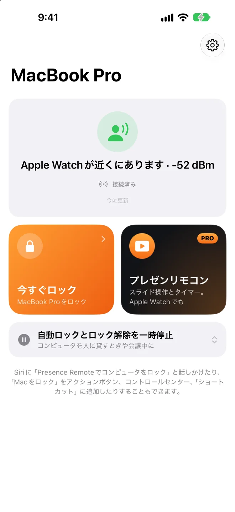

離れるとロック。戻ると解除。
Macのメニューバーで動き、iPhoneやApple WatchのBluetooth信号を受信します。iPhoneやApple WatchにAppは不要です。
Mac版は無料のオープンソースです。macOS 26以降が必要です。
ロック解除 ここまで離れると
ロック
Apple Watchが近くにあります−52 dBm
あなたを右へドラッグし、また戻ってみましょう。
誤ってロックするより、少し遅れて解除するほうがいい。
- 入力中なら待つ
- ロック
- Apple Watchが先に解除
- iPhoneで本人確認
- 最後にパスワード
ロックすべきときはロック。そうでないときは邪魔をしない。
プレゼン中はロックしない
KeynoteやPowerPointの再生中。
自宅ではロックしない
信頼するネットワーク、電源接続中、指定時間。
しばらく一時停止
15分〜4時間。終了時に不在ならロック。
不在中のロック解除がわかる
履歴に記録、写真撮影、iPhoneに通知。
今日はどれだけ座っていたか
座りすぎたときは立ち上がるよう通知。
BLEUnlockから乗り換え
デバイスとしきい値をワンクリックで移行。


ステージでは、iPhoneがリモコンに。
リモコンは買い足し不要。
ポインタを選んで、操作エリアを押したまま動かしてください。
ロックしたまま操作
ロック画面とDynamic Islandにボタン。
Apple Watchでも
タップ、Crownを回す、ダブルタップ。
発表タイマー
残り5分と終了時に手首をタップ。
Macの音量
投影画面に音量表示は出ません。
iPhoneがMacのトラックパッドとキーボードにも。
文字入力はiPhoneのキーボードで。
- 移動
- 左クリック
- 右クリック
- スクロール
- ドラッグ
- 切り替え
操作エリアでドラッグやタップ、または入力欄に文字を入力してください。
ロックは無料。リモコンとトラックパッドはPro。
Presence Pro
- プレゼンリモコンiPhone・Apple Watch
- トラックパッドとキーボードiPhone
サブスクリプションは7日間無料トライアル・ファミリー共有対応
Appでアップグレードよくある質問
iPhoneにAppをインストールする必要はありますか？
いいえ、Mac版だけで自動でロックと解除ができます。Presence Remoteで遠隔ロック、通知、解除前の確認が加わり、Presence Proでプレゼンリモコンとトラックパッドとキーボードが使えます。
必要なものは何ですか？
Mac：macOS 26以降。Presence Remote：iOS 26、watchOS 26以降。Apple Watchだけや、アドレスが固定されたほかのBluetoothデバイスでも使えます。
「Apple Watchでロック解除」とはどう違いますか？
macOS標準の機能はロック解除だけで、ロックはしません。Presenceは両方を行い、解除時は標準のWatch解除を優先します。2つは併用できます。
じっと座っているのにロックされることはありますか？
信号が数秒間弱いままのときだけロックされ、操作中は保留されます。敏感すぎる場合は「デバイス」ページで再キャリブレーションしてください。
Mac版がMac App Storeにないのはなぜですか？
自動ロック解除にはパスワード入力の再現が必要ですが、Mac App StoreのAppには許可されていません。Mac版はAppleの公証済みで、自動アップデートされます。
どのプレゼンAppで使えますか？
ページ送りは矢印キーを送るのでどのプレゼンAppでも使え、レーザーとスポットライトは画面の最前面に描かれます。先にMacのPresenceで「プレゼンリモコンを許可」をオンにしてください。
トラックパッドとキーボードはどうやって有効にしますか？
MacのPresenceで「iPhoneとWatch › iPhoneからの操作を許可」をオンにします（初期設定はオフ）。Macのロック中は操作を受け付けず、入力した文字も記録されません。
バッテリーを消耗しますか？
信号はもともと発信されており、PresenceはMacで受信するだけです。MacのCPU使用率はふだん1%未満です。